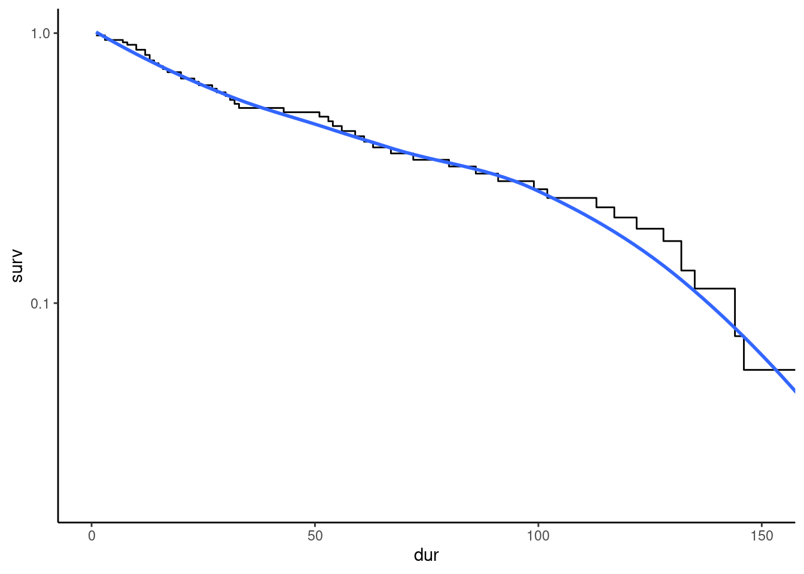
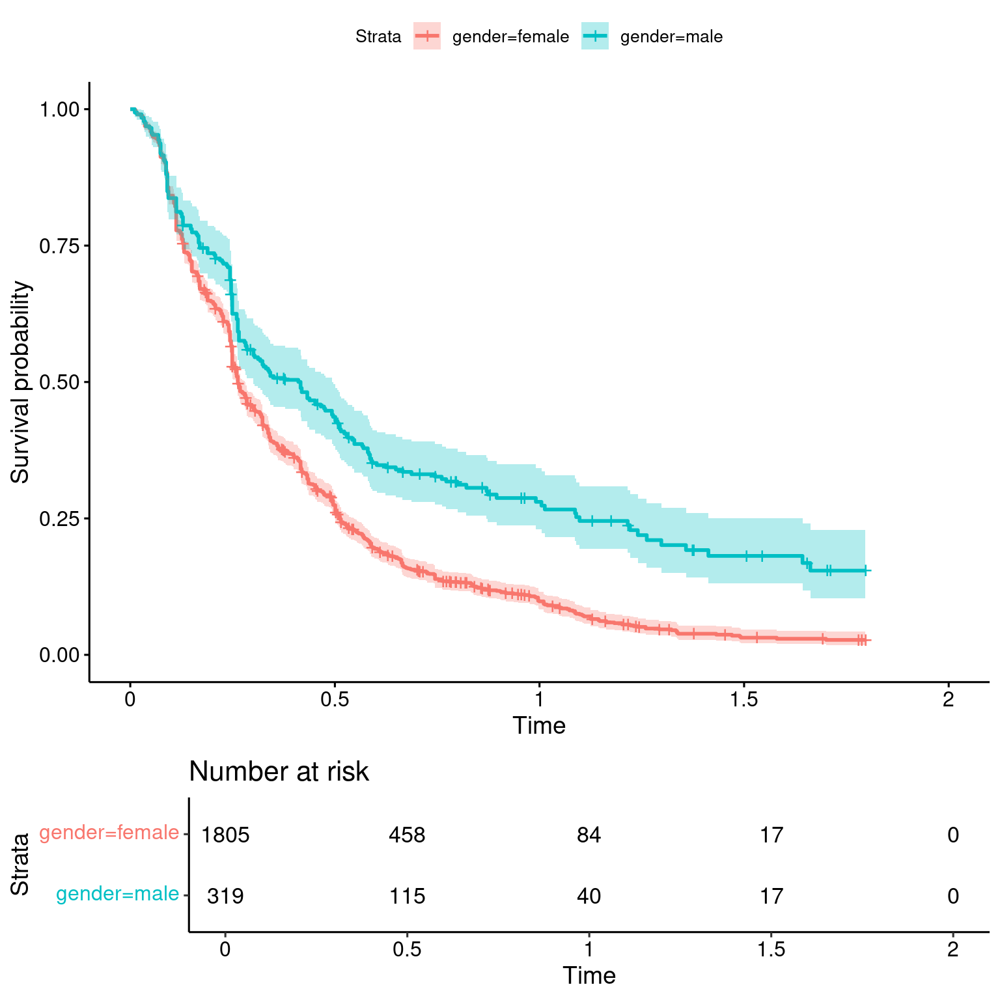
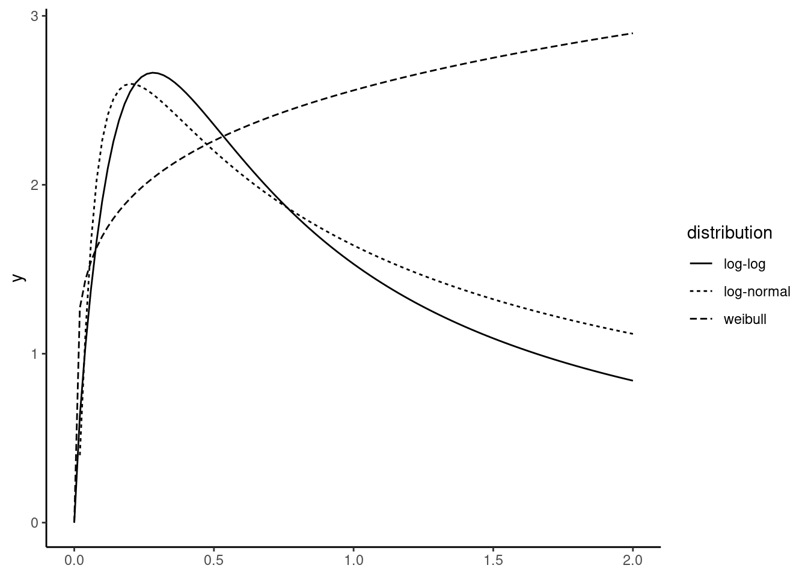
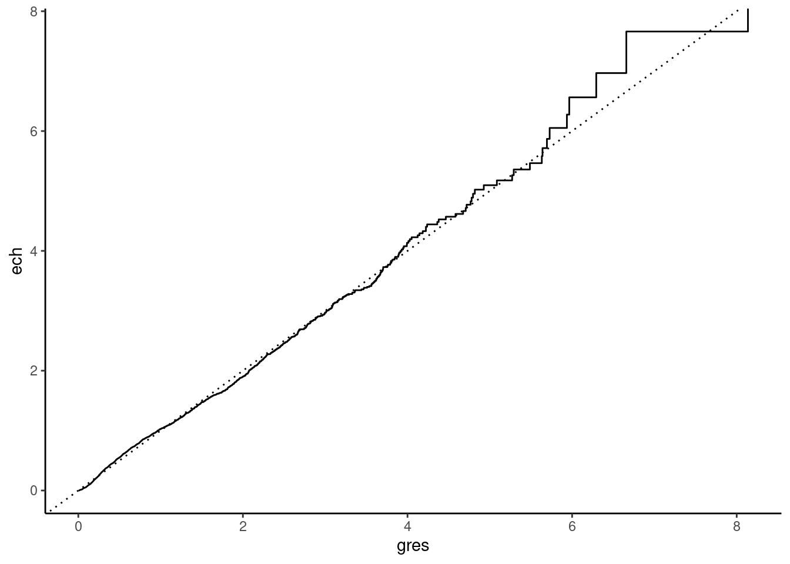
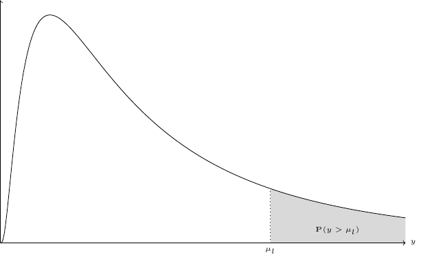

13 Duration models
When the response is a duration, specific models are used, which comes from the biostatistics (eg lifetime after an hearth transplant) and operations research (eg lifetime of a light bulb) literature. These data are called duration or transition data. The latter term indicates that we are interested in the time span of the transition from one state to another, the latter being called death and failure, respectively in the biostatistics and the operations research fields. For a given time, the observations for which the transition didn’t take place are called at-risk observations.
Duration data have two main characteristics, that require the use of specific models. The first is that they are continuous-positive variables. The second is that they are often censored, especially right-censored; for example, trying to modelize the length of unemployment spells, we’ll use survey data on employment realized in a given period (for example 2 years). At the end of the survey, some individuals are still unemployed because the spell is not finished, so that the duration of their spell is not observed, but only the fact that it is greater than the observed duration at the end of the survey.
Denote \(t\) as the duration response. Its distribution is given by a probability \(\mbox{P}(T \leq t) =F(t)\) and a density function \(f(t)\). The survival function is often used, which is \(S(t) = P(T > t) = 1 - F(t)\).1 For example, if \(T\) is measured in month and if \(t = 12\), \(F(12) = 0.8\) means that 80% of unemployment spells are less than 1 year, and \(S(12) = 0.2\) means that 20% of unemployment spells are more than 1 year. For a small variation of the spell (say \(dt = 1\) month), \(f(t)dt\) is the probability that the length of the spell is between \(t\) and \(t + dt\) (between 12 and 13 months in our example). Assume that \(f(12) = 0.06\). It means that 6% of the spells ends between the 12th and the 13th month. If we divide by \(S(12) = 0.2\), we get \(f(12) / S(12) = 0.3\), which means that 30% of the spells of at least one year ends during the 13th month. This is called the hazard function and it plays a central role in duration analysis. More formally, the hazard function is defined by:
\[ \theta(t)= \lim_{dt \rightarrow 0} \frac{\mbox{P}(t \leq T < t + dt \mid T > t)}{dt} = \lim_{dt \rightarrow 0} \frac{F(t + dt) - F(t)}{1 - F(t)} = \frac{f(t)}{S(t)} \tag{13.1}\]
The hazard function is also the derivative of the opposite of the logarithm of the survival function: \(\frac{\partial \ln S}{\partial t} = \frac{- f(t)}{S(t)} = - \theta(t)\) Inversely, the log survival function is a primitive of the hazard, so that, using the fact that \(S(0) = 1\), the cumulative hazard function \(\Lambda(t)\) is:
\[ \Lambda(t) = \int_{0} ^ t \theta(s) ds = - \ln S(t) \tag{13.2}\]
Now consider the area under the survival curve: \(\int_{0} ^ {+\infty} S(t) dt\). Integrating by part, we get: \(\int_0 ^ {+\infty} S(t) dt = \left[t S(t)\right]_0 ^ {+\infty} - \int_{0} ^ {+\infty} -f(t) t dt = \int_{0} ^ {+\infty} f(t) t dt\) as \(\lim_{t \rightarrow + \infty} S(t) t = 0\). Therefore, this area is the expected value of the duration of the spell.
The hazard and survival functions can also be defined in terms of discrete time either because the duration is intrinsically discrete or because it is rounded to a given time unit (weeks or months, for example). Consider that the event is observed for \(K\) distinct times, denoted by \(t_1, t_2, \ldots t_k, \ldots t_K\). If there are no ties, which means that all the events occur at a specific time, then \(K=N\). The discrete-time hazard function is the probability of transition at time \(t_j\) given survival to time \(t_j\):
\[\theta_j = P(T = t_j \mid T \geq t_j) = \frac{f^d(t_j)}{S^d(t_{j-})}\]
where \(S^d(t_{j-})\) is the value of the survival function just before \(t_j\). The discrete-time survivor function is obtained from the hazard function: \(S^d(t) = P(T \geq t) = \prod_{j | t_j \leq t} (1 - \theta_j)\). For example, the probability of surviving at least to \(t_2\) is: \(S^d(t_2) = (1 - \theta_1) (1 - \theta_2)\). The first term is the probability of no transition at \(t_1\), and the second one is the probability of no transition at \(t_2\) conditional on surviving to just before \(t_2\).
Section 13.1 is devoted to the non-parametric estimation of the survival function. Section 13.2 presents different parametric and semi-parametric estimators. Section 13.3 tackles the problem of heterogeneity in duration models. Finally, Section 13.4 presents miscellaneous duration models.
Duration analysis using R is performed using the survival package, which is a “recommended” package, which means that it comes with any R distribution.
13.1 Kaplan-Meier non-parametric estimator
The Kaplan-Meier estimator is a non-parametric estimator of the survival function. As such, it is very useful as a primary tool before developing more complicated parametric models.
Uncensored sample
To demonstrate this estimator, it is convenient to use first uncensored data. This is the case of the oil (Favero, Pesaran, and Sharma 1994) data set which indicates the number of months between the discovery of an oil field and the beginning of development. For each failure times \(t_k\), we count the number of events \(d_k\) (the number of spells ending at time \(t_k\)) and the number of observations at-risk, i.e., the number of spells which haven’t ended just before \(t_k\), denoted by \(r_k\). For the oil data set, we have 53 observations and the first ordered values of duration are:
oil %>% arrange(dur) %>% pull(dur) %>% head
## [1] 1 3 3 7 8 10Therefore, \(t_1 = 1\) and \(r_1 = 53\) because all the spells are at risk just before time is equal to 1. The hazard function for \(t_1\) is then estimated by \(1/53 = 0.0189\), and the survival function by \(1 - 1/53 = 0.981\), which means that the estimated probability that the spell is greater than 1 month is \(98.1\)%. For \(t_2= 3\), we have \(d_2 = 2\) and the number of observations at risk are the ongoing spells just before time is equal to 2, which is \(r_2 = r_1 - d_1 = 52\). The hazard function for \(t_2 = 3\) is then \(d_2 / r_2 = 2 / 52 = 0.038\), which means that the estimated probability of ending at time 3 for spells which are at least 1 month long is \(3.8\)%. The survival function for time equal to 3 is therefore:\((1 - d_1 / r_1) \times (1 - d_2 / r_2) = 0.981 \times 0.961 = 0.943\). Note that as \(r_1 = N\) and \(r_2 = r_1 - d_1 = N - d_1\), the estimated survival probability for \(t_2\) is \((1 - d_1 / N)(1 - d_2 / (N - d_1))\), which simplifies to \(1 - (d_1 + d_2) / N\). For \(t_3 = 7\), we have \(d_3 / r_3 = 1 / 50 = 0.02\) and the survival function can be either estimated by \(0.943 \times (1 - 0.02)\) or by \((1 - 4 / 53) = 0.9245\).
The whole survival series can be easily obtained with the following code; we first create a frequency table of durations (the durations are then automatically arranged in an increasing order), the n column then contains the number of spells that end at each period. We then compute the cumulative sums of this counts cumn and the survival probabilities as the cumulative count divided by \(N\).
surv_tb <- oil %>% count(dur) %>%
mutate(cumn = cumsum(n), surv = 1 - cumn / 53)
surv_tb# A tibble: 46 × 4
dur n cumn surv
<int> <int> <int> <dbl>
1 1 1 1 0.981
2 3 2 3 0.943
3 7 1 4 0.925
4 8 1 5 0.906
5 10 2 7 0.868
# ℹ 41 more rowsA more complex calculus (but which will prove to be useful if there are censored spells) consists of computing the number of spells at risk, the hazard and then the survival function as the cumulative product of 1 minus the hazard rate.
oil %>%
count(dur) %>%
mutate(cumn = cumsum(n),
at_risk = ifelse(dur == 1, 53, 53 - lag(cumn)),
hazard = n / at_risk,
surv = cumprod(1 - hazard))# A tibble: 46 × 6
dur n cumn at_risk hazard surv
<int> <int> <int> <dbl> <dbl> <dbl>
1 1 1 1 53 0.0189 0.981
2 3 2 3 52 0.0385 0.943
3 7 1 4 50 0.02 0.925
4 8 1 5 49 0.0204 0.906
5 10 2 7 48 0.0417 0.868
# ℹ 41 more rowsThe survival function can also be plotted. As it is a step function, using the geom_step function is particularly useful, see Figure 13.1.
km_oil <- surv_tb %>% ggplot(aes(dur, surv)) + geom_step()
km_oil
Reminding that \(\frac{\partial \ln S(t)}{\partial t} = - \lambda(t)\), it is useful to use a logarithmic y-axis as, the hazard is then the slope (in absolute value) of the curve (see Figure 13.2). In particular, the constant hazard hypothesis would induce a roughly linear survival curve.
km_oil + coord_cartesian(xlim = c(0, 150)) +
scale_y_continuous(trans = "log", breaks = c(0.01, 0.1, 1)) +
geom_smooth(se = FALSE)
We can see in this example that the hazard rate seems to be roughly constant for a wide range of values of duration (0-100 months) and then decreasing for high values of duration (\(>100\)). The Kaplan-Meier estimator can also be computed using the survreg::surfit function, with the usual formula-data interface. The response must be a Surv object, and the right-hand side of the formula is just an intercept. A Surv object is obtained using the Surv function. With uncensored data, its only argument is the duration response. We then have:
Call: survfit(formula = Surv(dur) ~ 1, data = oil)
n events median 0.95LCL 0.95UCL
[1,] 53 53 51 28 72The print method returns the number of observations (n) the number of events (events), which is equal to the number of observations if all the spells are uncensored, the median spell duration and its 95% confidence interval. The print.summary function returns a table with one row for each time some spells end. The object returned by survfit is not a data frame, but the broom:tidy method coerces it easily to a tibble:
broom::tidy(sf)# A tibble: 46 × 8
time n.risk n.event n.censor estimate std.error conf.high
<dbl> <dbl> <dbl> <dbl> <dbl> <dbl> <dbl>
1 1 53 1 0 0.981 0.0190 1
2 3 52 2 0 0.943 0.0336 1
3 7 50 1 0 0.925 0.0392 0.998
4 8 49 1 0 0.906 0.0443 0.988
5 10 48 2 0 0.868 0.0536 0.964
# ℹ 41 more rows
# ℹ 1 more variable: conf.low <dbl>There is a plot method for survfit objects that draws the survival curve and its confidence interval.
Censored sample
When there are censored observations, the computation is modified. Consider the retirement data set (An, Christensen, and Gupta 2004). It contains the joint duration until retirement for both spouses of 243 couples in Denmark.
retirement# A tibble: 2,430 × 17
id period agem agef dum84 unemp year0 durm durf censm censf
<dbl> <dbl> <dbl> <dbl> <dbl> <dbl> <dbl> <dbl> <dbl> <dbl> <dbl>
1 1 1 52 54 0 9.2 81 10 6 0 1
2 1 2 53 55 0 9.8 81 10 6 0 1
3 1 3 54 56 0 10.5 81 10 6 0 1
4 1 4 55 57 1 10.1 81 10 6 0 1
5 1 5 56 58 1 9.1 81 10 6 0 1
# ℹ 2,425 more rows
# ℹ 6 more variables: skillm <dbl>, skillf <dbl>, owner <dbl>,
# province <dbl>, year <dbl>, dum84bis <dbl>id is the couple identifier, there are several annual observations for every couple (because some covariates are time-varying), the duration until retirement for males is durm and censm is a dummy which equals 1 if the observation is right-censored. The corresponding variables for women are durf and censf. We’ll concentrate on women. To get one observation for each woman, we simply select these two variables, which are time-invariant, and we keep only the distinct rows:
ret <- retirement %>%
select(id, duration = durf, censored = censf) %>%
mutate(censored = ifelse(censored == 1, "yes", "no")) %>%
distinctAs there is no transition before 7, we set duration to 6 for durations lower than 7. We then construct a table containing for each period the number of events and the number of censored spells; we first count the occurrence of any duration-censored combinations, we then pivot the tibble in order to have one line for each duration and two columns for the number of events ("no") and the number of censored observations ("yes") for which we give finally more relevant names.
ret_tbl <- ret %>%
mutate(duration = ifelse(duration < 7, 6, duration)) %>%
count(duration, censored) %>%
pivot_wider(names_from = censored, values_from = n, values_fill = 0) %>%
rename(event = no, censored = yes)For each discrete time, we define the cumulative number of spells that exit the sample cumn, either because of transition or censoring. The number of observations at-risk just before \(t_j\) is equal to the total sample size minus the lag of cumn:
Finally, we compute the hazard \(\hat{\theta}_j\) as the ratio of the number of events at \(t_j\) and the number of observations at risk just before \(t_j\) and the survival \(\hat{S}_j\) as the cumulative product of \((1 -\hat{\theta}_j)\).
ret_tbl %>%
mutate(hazard = event / atrisk,
surv = cumprod(1 - hazard))# A tibble: 5 × 7
duration censored event cumn atrisk hazard surv
<dbl> <int> <int> <int> <dbl> <dbl> <dbl>
1 6 25 0 25 243 0 1
2 7 11 21 57 218 0.0963 0.904
3 8 12 12 81 186 0.0645 0.845
4 9 10 17 108 162 0.105 0.757
5 10 14 121 243 135 0.896 0.0785The same results are easily obtained using survfit. Once again, a formula-data interface is used, the response being a Surv object. In the context of a sample with right-censored observations, this object is obtained using the Surv function with two arguments:
-
time: the duration (observed or right-censored), -
event: a dummy for observed duration (i.e., uncensored observations). It can be either a boolean, 0/1 or 1/2.
If the Surv function is used with two unnamed arguments, it is assumed that these two arguments are time and event in that order. We use in our example a boolean obtained from the cens variable:
surv_ret <- survfit(Surv(duration, censored == "no") ~ 1, data = ret)
broom::tidy(surv_ret) %>% slice(- (1:6))# A tibble: 4 × 8
time n.risk n.event n.censor estimate std.error conf.high
<dbl> <dbl> <dbl> <dbl> <dbl> <dbl> <dbl>
1 7 218 21 11 0.904 0.0221 0.944
2 8 186 12 12 0.845 0.0293 0.895
3 9 162 17 10 0.757 0.0398 0.818
4 10 135 121 14 0.0785 0.256 0.130
# ℹ 1 more variable: conf.low <dbl>Different groups
When the observations belong to two or more groups, the survival curves can be estimated for each group.
We now use the unemp_teachers data set, initially used by Kastoryano and Klaauw (2022). It contains 3064 observations of unemployed Dutch teachers. Some of them performed a training; they are identified by a dummy called training. We restrict the sample to those who didn’t perform a training and we measure the duration in years:
unteach <- unemp_teachers %>% filter(! training) %>%
select(- training, - time_training) %>%
mutate(time = time / 365.25)
head(unteach, 3)# A tibble: 3 × 9
gender lowsk age wage time spell uidur month year
<fct> <dbl> <dbl> <dbl> <dbl> <dbl> <dbl> <dbl> <dbl>
1 female 0 48.5 14.0 0.586 1 822 8 2007
2 female 0 53.3 12.4 0.151 1 91 6 2007
3 female 0 50.9 7.99 0.501 1 183 8 2006We use survfit, this time with a factor, more precisely the gender factor to compute separate survival curves for males and females:
survfit_gender <- survfit(Surv(time, spell) ~ gender, unteach)
broom::tidy(survfit_gender) %>% print(n = 3)# A tibble: 450 × 9
time n.risk n.event n.censor estimate std.error conf.high
<dbl> <dbl> <dbl> <dbl> <dbl> <dbl> <dbl>
1 0.0110 1805 4 0 0.998 0.00111 1.00
2 0.0137 1801 7 0 0.994 0.00184 0.998
3 0.0164 1794 6 0 0.991 0.00230 0.995
# ℹ 447 more rows
# ℹ 2 more variables: conf.low <dbl>, strata <chr>The survminer package provides the ggsurvplot function, based on ggplot2, which enables to draw nice and highly customizable survival curves, as in Figure 13.3 where we set the risk.table argument to TRUE in order to have a table of observations at risk just below the figure.
survminer::ggsurvplot(survfit_gender, risk.table = TRUE, conf.int = TRUE)
The hypothesis of identical survival curves can be tested using a log-rank test. Denoting \(d_{tg}\) and \(r_{tg}\) as the number of failures and the number of observations at risk for the \(t\)th duration and the gth group, under the hypothesis of identical survival curves, the fitted number of failures is: \[\hat{d}_{tg}=\frac{d_{t1} + d_{t2}}{r_{t1} + r_{t2}} r_{tg}\]
The test statistic is based on \(\sum_t (d_{tg} - \hat{d}_{tg})\). Note that the value for the second group is necessarily the opposite of the one for the first group. The variance of this statistic is:
\[V = \frac{r_{t1}r_{t2}(r_t - d_t) d_t}{r_t^2(r_t-1)}\]
The statistic is then \(\left(\sum_t (d_{tg} - \hat{d}_{tg})\right) ^ 2 / V\) and is \(\chi ^ 2\) with 1 degree of freedom under the hypothesis of same survival. This test can be computed using the survival::surfdiff function, with the same syntax as the one used for survfit:
Call:
survdiff(formula = Surv(time, spell) ~ gender, data = unteach)
N Observed Expected (O-E)^2/E (O-E)^2/V
gender=female 1805 1600 1488 8.44 47.7
gender=male 319 222 334 37.60 47.7
Chisq= 47.7 on 1 degrees of freedom, p= 5e-12 The hypothesis of identical survival for males and females is highly rejected.
13.2 Parametric and semi-parametric estimators
In this section, we introduce covariates that may explain the length of the duration, or the value of the hazard function. Two kinds of models can be developed. The full parametric model specifies the whole distribution of the hazard function. On the contrary, in a semi-parametric approach, the hazard is the product of two component, the first depending on time and some parameters and the second depending only on the covariates and some other parameters. Then, only the second component is estimated, and therefore, the shape of the hazard doesn’t need to be specified. We’ll first consider the benchmark exponential model, for which the hazard is constant.2
Constant hazard and the exponential distribution
Consider the special case where the hazard is a constant \(\theta\). From Equation 13.2, the cumulative hazard is then: \(\Lambda(t) = \int_0 ^ {t} \theta ds = \theta t = - \ln S(t)\). The survival function is then \(S(t) = e^{-\theta t}\) and the opposite of its derivative is the density function \(f(t) = \theta e ^ {-\theta t}\). Therefore, if the hazard is constant, the distribution of \(T\) is the exponential distribution with parameter \(\theta\), which will be denoted by: \(T \sim E (\theta)\).
The moment generating function of \(T\) for the exponential distribution is:
\[M(s) = \mbox{E}\left(e^{sT}\right) = \int_0 ^ {+\infty}e^{st}\theta e^{-\theta t} dt = \frac{\theta}{\theta - s}\]
for \(\theta > s\). The cumulant generating function is the logarithm of the moment generating function:
\[ K(s) =\ln M(s) = \ln \theta - \ln(\theta - s) \]
and the limit for \(s\rightarrow 0\) of its first two derivatives with respect to \(s\) are the expected value and the variance of \(T\). Therefore, \(\mbox{E}(T)= \frac{1}{\theta}\) and \(\mbox{V}(T) = \frac{1}{\theta ^ 2}\). Therefore, for the exponential distribution, the mean equals the standard deviation. Moreover, the unit of measurement of \(\theta\) is the inverse of the time unit, so that \(\theta dt\) is a number without units.
Denote \(Z=\int_0 ^ T \theta(s) ds\) as the cumulative hazard. This is a transformation of the time-scale such that \(dZ = \frac{\partial Z}{\partial T} dT = \theta(T) dT\). With constant hazard, \(Z\) is simply proportional to \(T\), as \(dZ = \theta dT\), and the cumulative hazard is then \(\theta T\). For example, if the constant hazard is 0.1 and the time is measured in days, a variation of 1 in the initial time scale (1 day) corresponds to a variation of 0.1 on the transformed time scale. As the hazard is positive, we have:
\[ \mbox{P}(T \geq t) = \mbox{P}\left(\int_0 ^ T \theta(s) ds \geq \int_0 ^ t \theta(s) ds\right) = \mbox{P}(Z \geq z) \]
As \(\mbox{P}(T \geq t) = e^ {-\int_0 ^ t \theta(s) ds}\), we finally get: \(\mbox{P}(Z \geq z) = e ^ {-z}\), which means that \(Z\), the cumulative hazard, is a unit exponential random variable: \(Z \sim E(1)\).
Finally, consider the moment generating function of \(\ln T\) with \(T \sim E(\theta)\):
\[M(s)_{\ln T} = \mbox{E}\left( e ^ {s\ln T}\right) = \mbox{E}\left(T ^ s\right) = \int_0^{+\infty}t ^ s \theta e ^ {-\theta t}dt = \frac{\Gamma (1 + s)}{\theta ^ s}\]
with \(\Gamma(z) = \int_0^{+\infty}t^{z-1}e^{-t}dt\) the Gamma function. The corresponding cumulant generating function is: \(K(s)_{\ln T} = \ln \Gamma(1 + s) - s\ln \theta\), from which we obtain the expected value \(\psi(1) - \ln \theta\) and the variance, \(\psi'(1)\), where \(\psi\) and \(\psi'\) are the first and second derivatives of \(\ln \Gamma\). \(\psi\) is called the digamma function and \(\psi(1)=-\gamma\), \(\gamma \approx 0.57721\) being the Euler-Mascheronni constant. \(\psi'\) is called the trigamma function and \(\psi'(1) = \pi ^ 2 / 6\). As \(Z = \theta T \sim E(1)\), the density of \(Z\) is \(g(Z) = e ^ {-Z}\). Consider now \(U = \ln Z\). The density of \(U\) is:
\[ f(U) = e ^ {- e ^ U}\left| \frac{dZ}{dU}\right| = e ^ {- e ^ U} e ^ U \] which is the Gumbel distribution, also known as the extreme value distribution of type 1, for which \(F(U) = 1 - e^{-e^U}\), \(S(U) = e^{-e^U}\), \(\mbox{E}(U) = - \gamma\) and \(\mbox{V}(U) = \pi ^ 2 / 6\).3 As \(U = \ln Z = \ln T + \ln \theta\), we can write:
\[ \ln T = - \ln \theta + U \]
Now consider that the hazard depends on some covariates and denote \(\theta_n\) the value of the hazard for individual \(n\). Then we can write the exponential model in the following regression form:
\[ \ln T_n = - \ln \theta_n + U_n = -(\gamma + \ln \theta_n) + (U_n + \gamma) = -(\gamma + \ln \theta_n) + W_n \tag{13.3}\]
Then \(\mbox{E}(\ln T_n\mid z_n) = -(\gamma +\ln \theta_n)\), \(\mbox{E}(W\mid x_n) = 0\) and \(\mbox{V}(W\mid x_n) = \pi ^ 2 / 6\). \(\theta\) can be parametrized as \(e ^ {-\alpha + \beta ^ \top x_n}\), so that \(\ln T_n = (\alpha-\gamma) + \beta^\top x_n + W_n\).
Estimation
Duration models are estimated by maximum likelihood. For censored observations, the contribution to the likelihood is the probability of surviving at the censoring time, which is \(S(t_n \mid x_n)\). For uncensored observations, this is the density function: \(f(t_n \mid x_n)\). Therefore, denoting \(d_n\) a dummy for complete (uncensored) observations, we get:
\[ \ln L = \sum_{n=1} ^ N \left[d_n \ln f(t_n \mid x_n) + (1 - d_n) \ln S(t_n \mid x_n)\right] \] The log-likelihood function can also be expressed in terms of the hazard function, as \(\theta_n = f_n / S_n\):
\[
\ln L = \sum_{n=1} ^ N \left[d_n \ln \theta(t_n \mid x_n) + \ln S(t_n \mid x_n)\right]
\] If there are no censored observations and if the distribution of time is exponential, Equation 13.3 can be estimated by least squares, which will be consistent, although inefficient. The oil data set doesn’t have censored observations. Therefore, OLS estimation is consistent, even if it is less efficient than maximum likelihood if the distribution is really exponential. We estimated a model by maximum likelihood in Section 5.2.2, with p98 and varp98 as covariates. We reproduce this estimation using surveg and we compare the results with those obtained using lm. The survreg function has a dist argument that we set to "exponential". The response should be generated using the Surv function, with the duration as the only argument in this example, as all the observations are uncensored:
Call:
survreg(formula = Surv(dur) ~ p98 + varp98, data = oil, dist = "exponential")
Value Std. Error z p
(Intercept) 1.440 0.551 2.61 0.0089
p98 0.830 0.493 1.68 0.0924
varp98 0.295 0.157 1.88 0.0597
Scale fixed at 1
Exponential distribution
Loglik(model)= -258.5 Loglik(intercept only)= -272.6
Chisq= 28.2 on 2 degrees of freedom, p= 7.5e-07
Number of Newton-Raphson Iterations: 4
n= 53 Estimate Std. Error t value Pr(>|t|)
p98 0.948 0.446 2.12 0.039
varp98 0.226 0.146 1.55 0.127As expected, the two sets of slopes are rather close, but the ML estimator doesn’t seem to be more efficient in this example. \(\beta_k\) is the derivative of \(\ln T_n\) with \(x_{nk}\), so that \(d T_n / T_n = \beta_k dx_{nk}\). Moreover, \(d \theta_n / \theta_n = -\beta_k dx_{nk}\).
We then estimate the model for unemployment duration of Dutch teachers using as covariates the age, gender and (in log) last hourly wage:
un_exp <- survreg(Surv(time, spell) ~ age + gender + log(wage),
unteach, dist = "exponential")
coef(un_exp)(Intercept) age gendermale log(wage)
-2.63528 0.02794 0.14972 0.36472 The results indicate that male unemployment spell duration are 15% longer than those for females. One more year of age increases the length of the spell by 2.79%. Finally, 1% of more previous wage increases the duration of the spell by 0.36%.
Accelerated failure time model
The previous model is a special case of a class of models called accelerated failure time (AFT), for which the duration can be written as: \(T_n = Z / \lambda_n\), \(\lambda_n = e ^ {\gamma ^ \top z_n}\), and \(Z\) is a random variable that doesn’t depend on \(\gamma\) and \(x_n\). \(\lambda_n\) therefore has a multiplicative effect on failure time, and failure time is decelerated if \(\lambda < 1\) and accelerated if \(\lambda > 1\). The exponential model is such a model, with \(Z \sim E(1)\), or equivalently \(U = \ln Z\) is an extreme value of type-1. Therefore, the AFT models are based on the following specification:
\[ \ln T_n = - \ln \lambda_n + U_n \] where \(\lambda_n\) can be parametrized as \(e^{-\gamma ^ \top z_n}\), so that \(\ln T_n = \gamma ^ \top z_n + U_n\). Different choices of the distribution of \(U_n\) lead to different flavors of AFT models. The basic exponential model is an AFT model with \(U\) following an extreme value type-1 distribution. Two natural extensions of this model consist of introducing a supplementary parameter \(\sigma = 1 / \delta\) or considering different distributions for \(U\):
\[ \ln T_n = - \ln \lambda_n + \frac{1}{\delta} U_n = - \ln \lambda_n + \sigma U_n \]
Keeping for the moment the hypothesis that \(U_n\) is type-1 extreme value, as \(U = \delta \ln \lambda T\), the density of \(T\) is then:
\[ f(T) = e ^ {\delta \ln(\lambda T)} e ^ {- e ^ {\delta \ln(\lambda T)}} \frac{dU}{dT} = (\lambda T) ^ \delta e ^ {- (\lambda T) ^ \delta} \frac{\delta}{T} = \delta \lambda ^ \delta T ^ {\delta - 1} e ^ {-(\lambda T) ^ \delta} \]
and the corresponding survival function is: \(S(t) = e ^ {-(\lambda t) ^ \delta}\). This is a Weibull distribution, with a shape parameter equal to \(\delta\) and a scale parameter equal to \(\frac{1}{\lambda}\). The corresponding hazard function is: \(\theta(t) = \delta \lambda ^ \delta t ^ {\delta - 1}\). This Weibull model is the most common model used in duration analysis. It is particularly appealing, as it is very easy to estimate and because it can deal with either a hazard function that increases (\(\delta > 1\)) or decrease (\(\delta < 1\)) with time. In the first case, there is a positive time dependence and in the second case, a negative time dependence. Obviously, the Weibull model reduces to the exponential model if \(\delta = 1\). With \(\lambda_n = e ^ {- \gamma z_n}\) and denoting \(\epsilon_n = \ln T_n - \gamma ^ \top z_n\), the hazard and the survival functions are:
\[ \theta(t) = \delta t ^ {\delta - 1}e ^ {- \delta\gamma ^ \top z} = \frac{\delta}{t} e^ {\delta \epsilon} \;\mbox{and} \; S(t) = e^{-t ^ \delta e ^ {-\delta \gamma ^\top z}} \tag{13.4}\]
The log-likelihood function is then:
\[ \ln L = \sum_{n=1} ^ n d_n \left[\ln \delta - \ln t + \delta \epsilon_n\right] - e ^ {\delta\epsilon} \]
With \(U \sim \mathcal{N}(0, 1)\), \(\ln T = - \ln \lambda + \sigma U \sim \mathcal{N}(-\ln \lambda, \sigma)\) and therefore the time duration is log-normal and the hazard function is:
\[ \theta(t) = \frac{1}{\sigma t} \frac{\phi\left(\frac{\ln t + \ln \lambda}{\sigma}\right)}{1 - \Phi\left(\frac{\ln t + \ln \lambda}{\sigma}\right)} = \frac{1}{\sigma t} r\left(\frac{\ln t + \ln \lambda}{\sigma}\right) \]
with \(\phi\) and \(\Phi\) the density and the probability functions of a standard normal variable and \(r(z) = \phi(z) / \left(1 - \Phi(z)\right)\) is the inverse Mills’ ratio. With, as previously, \(\ln \lambda = - \gamma ^ \top z\), in terms of \(\epsilon = \ln t - \gamma ^ \top z\), we have:
\[ \theta(t) = \frac{1}{\sigma t}\frac{\phi(\epsilon/\sigma)}{1 - \Phi(\epsilon/\sigma)} \; \mbox{and}\; S(t) = 1 - \Phi(\epsilon/\sigma) \] The hazard function is then inverted U-shaped, whatever the value of \(\sigma\).
\[ \ln L = \sum_{n=1} ^ n d_n \left[-\ln \sigma - \ln t + \ln \phi(\epsilon_n/\sigma) \right] + (1 - d) \ln (1 - \Phi(\epsilon/\sigma)) \] Finally, consider that the distribution of \(U\) is standard logistic, so that \(f(u) = \frac{e^u}{(1 + e ^ u) ^ 2}\). As \(\delta \ln T \lambda = U\), \(\frac{dU}{dT} = \delta / T\) and the density of \(T\) is then:
\[ f(T) = \frac{ (\lambda T) ^ \delta}{\left(1 + (\lambda T) ^ \delta\right) ^ 2} \delta / T = \frac{\delta v T ^ {\delta - 1}}{(1 + v T ^ \delta) ^ 2} \]
with \(v = \lambda ^ \delta\). The cumulative density and the survival function are \(F(t) = \frac{vT ^ \delta}{1 + vT ^ \delta}\) and \(S(t) = \frac{1}{1 + vT ^ \delta}\), so that the hazard function is:
\[ \theta(t) = \delta \frac{v t ^ {\delta - 1}}{1 + v t ^ \delta} \] which is the log-logistic model. In terms of \(\epsilon\), we have:
\[ \theta(t) = \frac{\delta}{t}\frac{e ^ {\delta\epsilon}}{1 + e ^ {\delta\epsilon}},\; S(t) = \frac{1}{1 + e ^ {\delta\epsilon}} \] and the following log-likelihood function:
\[ \ln L = \sum_{n=1} ^ n d_n \left[\ln \delta - \ln t + \delta\epsilon_n \right] - (1 + d_n) \ln (1 + e^ {\delta\epsilon}) \]
If \(\delta = 1\), the hazard reduces to \(\theta(t) = v / (1 + vT)\) and is therefore decreasing from \(v\) for \(T\rightarrow 0\) to 0 for \(T\rightarrow + \infty\). The derivative of the hazard function is:
\[ \theta'(t) = - \frac{\delta v T ^ {\delta - 2}}{\left(1 + vT ^ \delta\right) ^ 2} \left[v T ^ \delta + (1 - \delta)\right] \]
If \(\delta < 1\) \(\theta'(t)\) is negative for all \(T\), so that the hazard function is decreasing, from \(+\infty\) to 0. Finally, if \(\delta > 1\), the hazard function is inverted U-shaped, with a maximum for \(T=\left(\frac{\delta - 1}{v}\right) ^ {1 / \delta}\) and tends to 0 for \(T \rightarrow 0\) and \(T \rightarrow + \infty\).
All these models are estimated by updating the exponential model previously estimated:
We first plot the hazard curves for a specific individual: we choose a male aged 35 with a last hourly wage of 10. We then compute \(\hat{\lambda}\) for the different models:
survreg objects have a scale object, which is the estimation of \(\sigma\) with our notations. As the Weibull and the log-logistic are expressed in term of \(\delta\), we take the inverse of this parameter for these two distributions.
s_llog <- un_llog$scale ^ (-1)
s_lnorm <- un_lnorm$scale
s_wei <- un_wei$scale ^ (-1)
c("log-log" = s_llog, "log-normal" = s_lnorm, "weibul" = s_wei)
## log-log log-normal weibul
## 1.7530 0.9948 1.1789\(\delta\) being larger than one for the log-logistic, we have an inverted U-shaped distribution for the hazard function. For the Weibull model, \(\delta < 1\), the hazard curve is then increasing. We can then write functions for the hazards functions and plot them using geom_function (see Figure 13.4).
lnorm <- function(d) 1 / (s_lnorm * d) *
dnorm( (log(d * l_lnorm) / s_lnorm)) /
pnorm( (log(d * l_lnorm) / s_lnorm), lower.tail = FALSE)
loglog <- function(d) s_llog * l_llog ^ s_llog *
d ^ (s_llog - 1) / (1 + (l_llog * d) ^ s_llog)
weib <- function(d) s_wei * l_wei ^ s_wei * d ^ (s_wei - 1)
ggplot() +
geom_function(fun = lnorm, aes(linetype = "log-normal")) +
geom_function(fun = loglog, aes(linetype = "log-log")) +
geom_function(fun = weib, aes(linetype = "weibull")) +
scale_x_continuous(limits = c(0, 2)) +
labs(linetype = "distribution")
The results of the four AFT models are presented in Table 13.1.
| exponential | weibull | log-logistic | log-normal | |
|---|---|---|---|---|
| (Intercept) | −2.635 | −2.511 | −2.705 | −2.634 |
| (0.149) | (0.128) | (0.138) | (0.140) | |
| age | 0.028 | 0.026 | 0.022 | 0.022 |
| (0.002) | (0.002) | (0.002) | (0.002) | |
| gendermale | 0.150 | 0.132 | 0.117 | 0.108 |
| (0.076) | (0.065) | (0.068) | (0.067) | |
| log(wage) | 0.365 | 0.350 | 0.310 | 0.270 |
| (0.061) | (0.051) | (0.057) | (0.058) | |
| Log(scale) | −0.165 | −0.561 | −0.005 | |
| (0.018) | (0.019) | (0.017) | ||
| Num.Obs. | 2124 | 2124 | 2124 | 2124 |
| AIC | 442.5 | 369.4 | 294.6 | 294.4 |
| BIC | 465.1 | 397.7 | 322.9 | 322.7 |
| RMSE | 0.36 | 0.35 | 0.33 | 0.33 |
Proportional hazard models
The proportional hazard (PH) models starts with the specification of the hazard function. More specifically, it is assumed that the hazard function can be written as the product of two terms:
\[ \theta(t | x) = \lambda(t, \rho) f(x, \gamma) \]
- the first depends only on the duration and on some unknown parameters; it is called the baseline hazard,
- the second depends on some covariates and some unknown parameters, but not on duration; it is parametrized as \(e ^ {\gamma ^ \top z} = e ^ {\alpha + \beta ^ \top x}\). Consider two individuals characterized by two sets of values for the covariates \(x_1\) and \(x_2\). The ratio of their hazard for a given duration is:
\[ \frac{\theta(t|x = x_1)}{\theta(t|x = x_2)}= \frac{f(x_1, \gamma)}{f(x_2, \gamma)} = \frac{e^ {\alpha + \beta ^ \top x_1}}{e ^ {\alpha + \beta ^ \top x_2}} = e ^ {\beta(x_1 - x_2)} \] and therefore doesn’t depend on the duration. This model is called for this reason the proportional hazard model. The marginal effect of one covariate on the hazard is:
\[ \frac{\partial \theta(t|x)}{\partial x_k} = \lambda(t, \rho) \frac{\partial f}{\partial x_k} = \lambda(t, \rho) \beta_k f(x, \gamma) = \beta_k\theta(t, x) \]
Therefore, the marginal effect is proportional to the hazard; more precisely, it is just \(\beta_k\) times the hazard. Note that the parametrization is the opposite of the one used for the AFT models. Therefore, the interpretation of the coefficients should be modified: a positive value of \(\beta_k\) means that the covariate has a positive effect on the hazard and therefore a negative effect on the duration. The most common used PH models are the exponential and the Weibull model. For the Weibull model, the hazard and the corresponding survival functions are generally parametrized as:
\[ \theta(t_n) = \delta t_n ^ {\delta - 1} e^{\gamma ^ \top z_n}\;\mbox{and}\; S(t_n) = e ^ {- t_n ^ \delta e ^ {\gamma^\top z_n}} \tag{13.5}\]
This is exactly the same hazard function as Equation 13.4 with a different parametrization: starting from the PH coefficients, the AFT coefficients are \(- \gamma / \delta\). The exponential model is obtained as the special case of Equation 13.5 where \(\delta=1\). In this case, the two vectors of coefficients of the AFT and the PH models are just opposite. The Weibull and the exponential models are the only two models which belong to the AFM and the PH family. Two more specifications of proportional hazard models are often used, namely the generalized Weibull and the Gompertz models.
The Cox proportional hazard model (Cox 1972, 1975) is semi-parametric, as only the \(f()\) function is estimated and not the baseline hazard function. It is better understood using a simple example. Without lack of generality, consider that the observations are arranged in an increasing order of duration. Consider a sample of size 4, with \(t = (2, 3, 5, 8)\). For time \(t_1 = 2\), all the observations are at risk (none of them failed before). Consider the probability that one observation \(n\) fails at time \(t_1=2\), given that it was at risk. This writes: \(P(t_n = t_1 | t_n \geq t_1)=\lambda(t_1) f(x_n, \gamma)\). The probability that an observation fails at \(t_1 = 2\) is the sum of this expression for the four observations: \(\lambda(t_1)\sum_{n = 1} ^ 4 f(x_n, \gamma)\). Finally, the probability that observation \(n\) fails given that one observation fails is:
\[\frac{\lambda(t_1)f(x_n, \gamma)}{\lambda(t_1)\sum_{n = 1} ^ 4 f(x_n, \gamma)} = \frac{f(x_n, \gamma)}{\sum_{n = 1} ^ 4 f(x_n, \gamma)}\]
This probability therefore doesn’t depend on the baseline hazard function. Moreover, if \(f(x_n, \gamma) = e ^ {\gamma^\top z_n}\), it has a logit form: \(e^{\gamma^\top z_n} / \sum_n e^{\gamma^\top z_n}\). As this is the first observation that failed for \(t_1 = 2\), the contribution of this observation is:
\[\frac{e^{\gamma^\top z_1}}{e^{\gamma^\top z_1} + e^{\gamma^\top z_2} + e^{\gamma^\top z_3}+e^{\gamma^\top z_4}}\]
The reasoning is similar for \(t_2 = 3\). The set of observations at risk is the last three observations and the contribution of observation \(2\) is then:
\[\frac{e^{\gamma^\top z_2}}{e^{\gamma^\top z_2} + e^{\gamma^\top z_3} + e^{\gamma^\top z_4}}\]
For observation 3, the set of observations at risk reduces to observations 3 and 4:
\[\frac{e^{\gamma^\top z_3}}{e^{\gamma^\top z_3} + e^{\gamma^\top z_4}}\]
Finally, for the last observation, the set of observations at risk is only this observation, so that the contribution of observation \(4\) is:
\[\frac{e^{\gamma^\top z_4}}{e^{\gamma^\top z_4}} = 1\]
The partial likelihood for the whole sample is the product of these four contributions:
\[ L = \frac{e^{\gamma^\top z_1}}{e^{\gamma^\top z_1} + e^{\gamma^\top z_2} + e^{\gamma^\top z_3} + e^{\gamma^\top z_4} }\times\frac{e^{\gamma^\top z_2}}{e^{\gamma^\top z_2} + e^{\gamma^\top z_3} + e^{\gamma^\top z_4} }\times \frac{e^{\gamma^\top z_3}}{e^{\gamma^\top z_3} + e^{\gamma^\top z_4}} \times 1 \]
A more general expression is obtained by denoting \(R_n\) the set of observations for which \(t_m \geq t_n\), i.e., the set of observations at risk at time \(t_n\):
\[L = \prod_{n=1}^N\frac{e^{\gamma ^ \top z_n}}{\sum_{n \in R_n}e^{\gamma ^ \top z_n}}\]
and the partial log-likelihood is therefore:
\[\ln L = \sum_{n=1}^N\left(\gamma ^ \top z_n - \ln \sum_{n \in R_n}e^{\gamma ^ \top z_n}\right)\] An interesting feature of Cox proportional hazard model is that the duration response is only used as a way to order the observations. For example, if \(t = (1, 2, 3, 4)\) instead of \(t = (2, 3, 5, 8)\), we would obtain exactly the same likelihood and therefore the same fitted parameters. Censored observations contribute only to the partial likelihood as elements of the set of observations at risk for some observations. For example, if observation \(2\) is censored, the likelihood is:
\[L = \frac{e^{\gamma^\top z_1}}{e^{\gamma^\top z_1} + e^{\gamma^\top z_2} + e^{\gamma^\top z_3} + e^{\gamma^\top z_4} }\times \frac{e^{\gamma^\top z_3}}{e^{\gamma^\top z_3} + e^{\gamma^\top z_4}} \times 1\]
and the general formula for the partial log-likelihood is, denoting \(d_n\) a dummy equal to 0 if observation \(n\) is censored and 1 otherwise:
\[\ln L = \sum_{n=1}^Nd_n\left(\gamma ^ \top z_n - \ln \sum_{n \in R_n}e^{\gamma ^ \top z_n}\right)\]
Consider now that the sample includes ties, for example \(t = (2, 4, 4, 8)\). Durations for \(n = 2\) and \(n = 3\) are equal because of rounding measures, and we don’t know which observation failed first. If the event occured first for \(n=2\), the probability for observations \(2\) and \(3\) is:
\[\frac{e^{\gamma^\top z_2}}{e^{\gamma^\top z_2} + e^{\gamma^\top z_3} + e^{\gamma^\top z_4}} + \frac{e^{\gamma^\top z_3}}{e^{\gamma^\top z_3} + e^{\gamma^\top z_4}}\] On the contrary, if the event occurs first for \(n=3\):
\[ \frac{e^{\gamma^\top z_3}}{e^{\gamma^\top z_2} + e^{\gamma^\top z_3} + e^{\gamma^\top z_4}} + \frac{e^{\gamma^\top z_2}}{e^{\gamma^\top z_2} + e^{\gamma^\top z_4} } \] The probability for observations \(2\) and \(3\) is the sum of these two probabilities and the partial likelihood is then:
\[ \left(\frac{e^{\gamma^\top z_2}}{e^{\gamma^\top z_2} + e^{\gamma^\top z_3} + e^{\gamma^\top z_4}} + \frac{e^{\gamma^\top z_3}}{e^{\gamma^\top z_3} + e^{\gamma^\top z_4}}+\frac{e^{\gamma^\top z_3}}{e^{\gamma^\top z_2} + e^{\gamma^\top z_3} + e^{\gamma^\top z_4}} + \frac{e^{\gamma^\top z_2}}{e^{\gamma^\top z_2} + e^{\gamma^\top z_4}}\right) \]
Therefore, in the case of a tie with two observations, the product of two probabilities is replaced by the sum of four probabilities. If there were a tie with three observations, the product of three probabilities would be replaced by the sum of 18 probabilities. More generally, with a tie of \(k\) observations, the number of probabilities that should be computed is \(k\times k!\). For example, with \(k=10\), more than \(30\) million probabilities should be computed. Therefore, this formula can only be applied when there are few and “thin” ties. Otherwise, approximations have been proposed by Breslow and Efron. The survival::coxph function fits the Cox proportional hazard regression model. We’ve already estimated the Weibull model using the survival::survreg function in its accelerated failure time parametrization. micsr::weibreg enables to estimate the Weibull model using either the AFT or the proportional hazard parametrization, using the model argument:
The results are presented in Table 13.2. As stated previously, starting from the PH coefficient, the AFT is obtained as the opposite divided by \(\delta\); for example, for age: \(-(-0.031 / 1.179) = 0.026\). Obviously, the value of the log-likelihood function is the same for the PH and the AFT versions of the Weibull model.
| Weibull (AFT) | Weibull (PH) | Cox model | |
|---|---|---|---|
| (Intercept) | −2.511 | 2.961 | |
| (0.128) | (0.155) | ||
| gendermale | 0.132 | −0.156 | −0.137 |
| (0.065) | (0.076) | (0.076) | |
| age | 0.026 | −0.031 | −0.028 |
| (0.002) | (0.003) | (0.002) | |
| log(wage) | 0.350 | −0.412 | −0.371 |
| (0.051) | (0.061) | (0.061) | |
| shape | 1.179 | 1.179 | |
| (0.021) | (0.021) | ||
| Num.Obs. | 2124 | 2124 | 2124 |
| AIC | 369.4 | 369.4 | 24745.2 |
| BIC | 397.7 | 397.7 | 24762.2 |
| Log.Lik. | −179.682 | −179.682 | |
| RMSE | 0.91 |
13.3 Heterogeneity
Consider a population with two groups characterized by two different constant hazard rates, 0.4 for the first group and 0.1 for the second group.4 If there are 100 individuals in both groups, the number of events (observations at risk) for the first group is \(0.4 \times 100 = 40\) (60) for the first period, \(0.4 \times 60 = 24\) (36) for the second and \(0.4 \times 36 = 21.6\) (12.96) for the third. For the second group, we get \(0.1 \times 100 = 10\) (90) for the first period, \(0.1 \times 90 = 9\) (81), \(0.1 \times 81 = 8.1\) (72.9) and \(0.1 \times 72.9 = 7.29\) (65.61). Summing for the two groups, we get 50 (150), 33 (117), 22.5 (94.5). The hazard is then \(50 / 200 = 0.25\) for the first period, \(33/150 = 0.22\) for the second one and \(22.5 / 117 = 0.1923\) for the third period. The hazard rate for the whole population is therefore decreasing, although it is constant for every individual. This result is easy to understand because, as times goes on, the proportion of individuals with the low hazard rate in the observations at risk is increasing. It is therefore important to detect the presence of heterogeneity and, in the presence of heterogeneity, to fit models that take heterogeneity into account.
Detecting heterogeneity
If heterogeneity is present, fitting a model that doesn’t take it into account results in a wrong specification that can be tested using generalized residuals. In the context of duration models, integrated hazards can be considered as generalized residuals, as, if the specification is correct, their distribution is a unit exponential. Using the accelerating failure specification, remember that the integrated hazard is \(\epsilon_n = \Lambda(t_n) = - \ln S(t_n) = e ^ {\delta (\ln t - \gamma ^ \top z_n)}\). The distribution of \(\epsilon_n\) doesn’t depend on \(x_n\) and , being a unit exponential distribution, its first four uncentered moments are \(1, 2, 6, 24\). To get an idea of the relevance of the specification, we can plot minus the log of the empirical survival (which is the number of observations \(m\) such that \(\epsilon_m > \epsilon_n\) divided by the total number of observations) against the generalized residuals; the points should then be grossly aligned on the 45o line. For censored observations, the duration is not known and the integrated hazard is replaced by its expectation. Denoting \(L\) the censoring time, the expectation is:
\[ \mbox{E}(\epsilon(T) \mid T \geq L)=\int_{\epsilon(L)} ^ {+\infty}\frac{\epsilon f(\epsilon)}{S(\epsilon(L))} d\epsilon = \frac{1}{e^ {-\epsilon(L)}} \int_{\epsilon(L)} ^ {+\infty}\epsilon e ^ {- \epsilon}d\epsilon = \epsilon(L) + 1 \]
Figure 13.5 plots the generalized residuals, that has been computed using the micsr::gres function. The fit seems excellent for low values of the generalized residuals, and bad for values higher than 4 (about 2% of the sample).
weib <- weibreg(Surv(time, spell) ~ gender + age + log(wage),
unteach)
un_gres <- gres(weib)
N <- nobs(weib)
int_haz <- tibble(gres = un_gres) %>% group_by(gres) %>%
summarise(n = n()) %>% arrange(gres) %>%
mutate(cumn = cumsum(n), esurv = 1 - cumn / N, ech = - log(esurv))
int_haz %>% ggplot(aes(gres, ech)) + geom_step() +
geom_abline(intercept = 0, slope = 1, linetype = "dotted")
The empirical moments are:
Conducting a conditional moment test, we get:
cmtest(weib, powers = 2:4, opg = FALSE) %>% gaze
## chisq = 3.860, df: 3, pval = 0.277and the hypothesis of a correct specification is therefore not rejected.
Weibull-Gamma model
To take into account the heterogeneity, we can use mixing distributions, either finite (taking for example two categories of individuals as in the introductory example) or infinite. We’ll present in this section a model very widely used for its simplicity, the Weibull-Gamma model. Assume that the survival function for individual \(n\) is:
\[ S(t_n\mid x_n,\nu_n) = e ^ {-\mu_n\nu_n t_n ^ \delta} \tag{13.6}\]
where as usual, \(\mu_n = e ^ {\alpha + \beta x_n}\). \(\nu_n\) is an unobserved term that is specific to the individual. If it were observed, we would get the usual Weibull model. As it is unobserved, we have to consider the unconditional survival function, i.e., we have to integrate out Equation 13.6 with \(\nu\). Denoting \(f\) the density of \(\nu\), we get:
\[ S(t_n\mid x_n) = \int_0 ^ {+ \infty} e ^ {-\mu_n\nu t_n ^ \delta}f(\nu)d\nu \tag{13.7}\]
If the regression contains an intercept, the mean of \(\nu\) is not identified and can be set to 1. The one-parameter Gamma distribution is:
\[ f(\nu) = \frac{\rho ^ \rho \nu ^ {\rho - 1} e ^ {-\rho \nu}}{\Gamma(\rho)} \] with \(\mbox{E}(\nu) = 1\) and \(\mbox{V}(\nu) = 1 / \rho\). Using this mixing distribution, we get:
\[ S(t_n\mid x_n) = \int_0 ^ {+ \infty} e ^ {-\mu_n\nu t_n ^ \delta}\frac{\rho ^ \rho \nu ^ {\rho - 1} e ^ {-\rho \nu}}{\Gamma(\rho)}d\nu= \frac{\rho ^ \rho}{\Gamma(\rho)}\int_0 ^ {+ \infty} e ^ {-\nu(\mu_n\nu t_n ^ \delta + \rho)}\nu ^ {\rho - 1} d\nu \] With the change of variable: \(u = \nu(\mu_n\nu t_n ^ \delta + \rho)\):
\[ S(t_n\mid x_n) = \int_0 ^ {+\infty} e ^ {-\mu_n\nu t_n ^ \delta}\frac{\rho ^ \rho \nu ^ {\rho - 1} e ^ {-\rho \nu}}{\Gamma(\rho)}d\nu= \frac{\rho ^ \rho}{\Gamma(\rho)}\frac{1}{(\mu_n t_n ^ \delta + \rho) ^ \rho}\int_0 ^ {+\infty} e ^ {-u}u ^ {\rho - 1} d\nu \] which simplifies to: \(\left(\frac{\mu_n t_n ^ \delta}{\rho} + 1\right) ^ {-\rho}\). As \(\rho\) is the inverse of the variance, it is simpler to parametrize the survival function with \(\chi = 1 / \rho\), so that the hypothesis of homogeneity is simply \(\chi = 0\):
\[ S(t_n\mid x_n) = \frac{1}{\left(1 + \chi\mu_n t_n ^ \delta\right) ^ \frac{1}{\chi}} \]
The density is obtained as the opposite of the derivative of the survival function. The corresponding hazard function is:
\[ \theta(t_n \mid x_n) = \frac{\delta \mu_n t_n ^ {\delta - 1}}{1 + \chi\mu_n t_n ^ \delta} \] and the log-likelihood function is then:
\[ \ln L = \sum_{n=1} ^ n d_n \left[\ln \delta + (\delta - 1)\ln t + \ln \mu_n \right] - (1/\chi + d_n)\ln \left(1+\chi\mu_n t_n ^ \delta\right) \]
as \(\chi \rightarrow 0\), \(\ln \left(1 + \chi \mu_n t_n ^ \delta\right)\rightarrow \chi\mu_n t_n ^ \delta\) so that the Weibull is obtained as the limiting case where the variance of the mixing distribution tends to 0. Remember from Table 13.1 that, for the Weibull AFT model, the scale parameter was \(\sigma = 0.85\), which corresponds to \(\delta = 1 / 0.85 = 1.18\) and therefore to an increasing hazard rate. The micsr::weibreg function estimates the Weibull-Gamma model when the mixing argument is set to TRUE:
weib <- weibreg(Surv(time, spell) ~ gender + age + log(wage),
unteach)
weib %>% gaze(coef = "shape")
## Estimate Std. Error z-value Pr(>|z|)
## shape 1.1789 0.0215 55 <2e-16
gweib <- update(weib, mixing = TRUE)
gweib %>% gaze(coef = c("shape", "var"))
## Estimate Std. Error z-value Pr(>|z|)
## shape 1.5978 0.0635 25.15 < 2e-16
## var 0.7017 0.1039 6.75 1.5e-11The supplementary parameter (\(\chi\)) is called "var" and is highly significantly different from 0, so that the hypothesis of homogeneity is highly rejected. Note also that the shape parameter is much higher than previously.
13.4 Other models
Multi-state models
Consider now the case where several events are possible, for example two events denoted \(a\) and \(b\). Let \(\tilde{t}_n^a\) and \(\tilde{t}_n^b\) be the duration for individual \(n\) for the two events \(a\) and \(b\). The observed duration is \(t_n\). Three cases should be considered:
- \(t_n < \mbox{min}(\tilde{t}_n^a, \tilde{t}_n^b)\) (which means that \(t_n < \tilde{t}_n ^a\) and \(t_n < \tilde{t}_n^b\)), the observation is then censored,
-
\(t_n = \mbox{min}(\tilde{t}_n^a, \tilde{t}_n^b)\), the event is:
- \(a\) if \(\tilde{t}_n ^ a < \tilde{t}_n ^ b\),
- \(b\) if \(\tilde{t}_n ^ a > \tilde{t}_n ^ b\).
The competing risk model is a very simple multi-state model which extends the Cox proportional hazard model to the multi-state case. Consider for example state \(a\). For an observation \(n\), if the event \(a\) is observed, we have an observation of a complete spell. Otherwise, if the event is \(b\), this means that \(t_n = \tilde{t}_n^b < \tilde{t}_n^a\) and the observation is censored as far as we are interested in state \(a\). We can therefore estimate the competing risk model with two independent Cox PH models:
- for the first, the event is \(a\) and censoring occurs either if the observation is censored or if the event is \(b\),
- for the second, the event is \(b\) and censoring occurs either if the observation is censored or if the event is \(a\),
Consider the recall data set, initially used by Katz (1986) and later by Sueyoshi (1995). It contains 1045 spells of unemployment in 1980.
recall %>% print(n = 3)# A tibble: 1,045 × 16
id spell end duration age sex educ race nb ui
<dbl> <dbl> <fct> <dbl> <int> <fct> <int> <fct> <int> <fct>
1 4 1 recall 17 26 male 5 white 3 yes
2 7 2 recall 39 24 male 8 white 4 no
3 7 3 censored 40 23 male 8 white 4 no
# ℹ 1,042 more rows
# ℹ 6 more variables: marital <fct>, unemp <int>, wifemp <fct>,
# homeowner <fct>, occupation <fct>, industry <fct>The analysis of Katz (1986) showed that an important transition from unemployment was a recall from the previous employer. The end covariate indicates the different modalities of transition:
recall %>% count(end)# A tibble: 3 × 2
end n
<fct> <int>
1 new-job 218
2 recall 593
3 censored 234We consider the new-job and recall modalities as an indication of a complete spell. The model for unemployment spells is estimated using as covariates the age, sex, years of education, number of dependents (nb), a dummy for unemployment insurance during the spell (ui), marital status, county unemployment rate (unemp), wife’s employment status, a dummy for home ownership and factors for occupation and industry. The competing risk model can then be estimated using the following two calls to coxph:
where the event argument is a dummy equal to TRUE when end equals "recall" for the first regression and "new-job" for the second regression. The competing risk model can be estimated more simply with a simple call to coxph when the event argument is a factor for which the first level indicates censored observations. In the recall data set, the first level is "new-job", so that we need to change the order of the levels using relevel:
recall %>% pull(end) %>% levels
## [1] "new-job" "recall" "censored"
recall <- recall %>% mutate(end = relevel(end, "censored"))
recall %>% pull(end) %>% levels
## [1] "censored" "new-job" "recall"Moreover, the id argument is mandatory. This is the individual identifier and it is really useful only when there are several observations for the same individuals, which is not the case here. We therefore create an idspell variable before proceeding to the estimation. To save space, we use a very limited subset of covariates.
recall <- recall %>%
add_column(id_spell = 1:nrow(recall), .before = 1)
coxph(Surv(duration, end) ~ age + sex, data = recall, id = id_spell)Call:
coxph(formula = Surv(duration, end) ~ age + sex, data = recall,
id = id_spell)
1:2 coef exp(coef) se(coef) robust se z p
age -0.017 0.983 0.008 0.008 -2 0.02
sexfemale -0.381 0.683 0.189 0.190 -2 0.04
1:3 coef exp(coef) se(coef) robust se z p
age 0.022 1.022 0.004 0.004 6 2e-09
sexfemale -0.386 0.680 0.119 0.122 -3 0.002
States: 1= (s0), 2= new-job, 3= recall
Likelihood ratio test=56 on 4 df, p=2e-11
n= 1045, unique id= 1045, number of events= 811 Grouped data
Duration is often recorded not as a continuous variable, but as a set of intervals. For example, unemployment duration may not be measured in days, but in months or years. In this case, the model must be written in terms of discrete time. Denote \(t_0, t_1, t_2, ... t_T\) (with \(t_0=0\)) and \(a\) the interval defined by \(t_{a-1} \leq t< t_a\). The survival at time \(t_a\) is such that \(- \ln S(t_a) = \int_0 ^ {t_a} \theta(s) ds\). Therefore, for the \(a\)th interval, we have:
\[ - \ln S(t_a) + \ln S(t_{a-1}) = - \ln \frac{S(t_a)}{S(t_{a-1})} = \int _{t_{a-1}} ^ {t_a} \theta(s) ds \] The hazard in the \(a\)th interval is the probability of an event in this interval (which is the difference in survival) divided by the initial value of the survival:
\[ \theta_a = \frac{S(t_{a-1}) - S(t_a)}{S(t_{a-1})}= 1 - e ^ {-\int _{t_{a-1}} ^ {t_a} \theta(s) ds} \] Now assume a proportional hazard: \(\theta (s) = \lambda(s) e^ {\gamma^\top z_s}\). Denoting \(\delta_a = \ln \int_{t_{a-1}} ^ {t_a} \lambda(s) d_s\), we get:
\[ \theta_a = 1 - e ^ {- e ^ {\delta_a + \gamma ^ \top z_{t_{a-1}}}} = F(\delta_a + \gamma ^ \top z_{t_{a-1}}) \] Where \(F\) is the CDF of the extreme value type 1 distribution. Note that the covariates may be time-varying from one interval to another. In a given interval, values of the covariates are measured at the beginning of the interval. The discrete survival function at the beginning of this interval is:
\[ S_{t_{a-1}} = \prod_{s = 1} ^ {a-1} (1 - \theta_s) = \prod_{s = 1} ^ {a-1} (1 - F(\delta_s + \beta ^ \top x_{t_{s-1}})) \] The probability of a transition in the \(a\)th interval is the product of the discrete hazard for interval \(a\) and the value of the survival function at the beginning of this interval (i.e., \(t_{a-1}\)). For observation \(n\), the contribution to the likelihood is then:
\[ F(\delta_{a_n} + \gamma ^ \top z_{nt_{a-1}})\prod_{s = 1} ^ {a_n-1} (1 - F(\delta_s + \gamma ^ \top z_{nt_{s-1}})) \] Finally, the log-likelihood is, denoting \(F_{ns} = F(\delta_s + \gamma ^ \top z_{nt_{s-1}})\) and \(y_{ns}\) a dummy equal to 1 if \(n\) has a transition in the \(s\)th interval and 0 otherwise:
\[ \begin{array}{rcl} \ln L &=& \sum_{n=1} ^ N \left[\sum_{s=1} ^ {a_{n-1}}\ln (1 - F_{ns}) +\ln F_{na_n}\right]\\ &=& \sum_{n=1} ^ N \sum_{s=1} ^ {a_n}\left[(1 - y_{ns})\ln (1 - F_{ns}) +y_{ns}\ln F_{ns}\right] \end{array} \tag{13.8}\]
This is an unbalanced pooled binomial model, the number of observation for each individual being the index of the interval of its transition. Equation 13.8 deals correctly with right-censored observation as, in this case, \(y_{na_n} = 0\) and the correct term (\(1 - F_{na_n}\)) is introduced in the log-likelihood. A specific set of \(\delta_s\) parameters can be estimated, which enables to retrieve from the estimation the shape of the hazard function.
An alternative to this binomial model is to start with the proportional hazard formulation: \(\theta(t) = \lambda(t) e ^ {-\gamma ^ \top z}\)5 and to compute the integrated hazard: \(\int_0 ^ t\theta(s)d s = e ^ {-\gamma ^ \top z_t}\int_0 ^ t \lambda(s)ds = e ^ {\delta_t - \gamma ^ \top z_t}\) where \(\gamma_t\) is defined as: \(\ln \int_0 ^ t \lambda(s)ds\). As the integrated hazard is the opposite of the logarithm of the survival function, we have: \(S(t) = e ^ {- e ^ {\delta_t - \gamma ^ \top z_t}}\). The probability of transition in the \(a\)th interval is \(S(t_{a-1}) - S(t_a) = F(t_a) - F(t_{a - 1})\), with \(F(z) = 1 - e ^ {- e ^ z}\) the CDF of the extreme value type 1 distribution. Therefore, the log-likelihood is:
\[ \ln L = \sum_{n=1} ^ N \sum_{s = 1} ^ {A} y_{ns} \ln\left[F(\delta_{t_s} - \gamma ^ \top z_{nt_s}) - F(\delta_{t_{s-1}} - \gamma ^ \top z_{nt_{s-1}})\right] \] which is the ordered model (see Equation 10.17), \(\delta_t\) being a set of threshold. With censored observations, denoting \(d_n\) a dummy for complete observations, the log-likelihood becomes:
\[
\begin{array}{rl}
\ln L = \sum_{n=1} ^ N y_{ns}\sum_{s = 1} ^ {A}& \left(d_n\ln\left[F(\delta_{t_{a_n}} - \gamma ^ \top z_n) - F(\delta_{t_{a_n-1}} - \gamma ^ \top z_n)\right]\right.\\
&+ \left.(1 - d_n) \ln\left[1 - F(\delta_{t_{a_n}} - \gamma ^ \top z_n)\right]\right)
\end{array}
\] With the micsr::ordreg function, the response can be a Surv objects in order to take into account censored observations.
form_ord <- Surv(duration, end == "recall") ~ age + sex + educ + race +
nb + ui + marital + unemp + wifemp + homeowner + occupation + industry
recall_ord <- ordreg(form_ord, recall, link = "cloglog")To estimate the binomial model, we first need to construct the pooled sample, i.e., to get one line for one period for every spell. We first create a data frame with only the identifiers for the individual and the spell and the duration. We then nest the data frame by the two identifiers. This results in a new column called data that contains, for each observation a one-line one-column tibble containing the duration of the spell. Using mutate, we then create a new column in data containing integers from 1 to the given value of duration for each observation. We then ungroup and remove the duration column.
durations <- recall$duration %>% unique
pooled <- recall %>%
select(spell, id, duration) %>%
nest_by(spell, id) %>%
mutate(period = list(1:data$duration)) %>%
unnest(cols = c(data, period)) %>%
ungroup %>%
select(- duration)
pooled %>% print(n = 3)# A tibble: 14,646 × 3
spell id period
<dbl> <dbl> <int>
1 1 4 1
2 1 4 2
3 1 4 3
# ℹ 14,643 more rowsThere are some periods without observations of an event or a censoring. Observations for these periods should be removed:
Finally we join this tibble with the initial tibble, and we create the event variable (end should be "recall" and the period should be equal to the duration).
recall_pooled <- pooled %>%
left_join(recall, by = c("spell", "id")) %>%
mutate(event = (end == "recall" & period == duration))We then estimate different flavors of binomial models, using the same formula than for the ordered model, except that the response is now event and that dummies for periods are added:
Results are presented in Table 13.3.
| ordered cloglog | binomial cloglog | probit | |
|---|---|---|---|
| age | −0.014 (0.004) | 0.014 (0.004) | 0.006 (0.002) |
| female | 0.014 (0.155) | −0.016 (0.155) | 0.006 (0.073) |
| educ | 0.032 (0.022) | −0.030 (0.022) | −0.016 (0.011) |
| non-white | 0.240 (0.097) | −0.240 (0.097) | −0.117 (0.048) |
| No of dependents | 0.002 (0.029) | −0.002 (0.029) | −0.005 (0.015) |
| UI receipt | 0.191 (0.096) | −0.187 (0.096) | −0.084 (0.047) |
| married | −0.044 (0.146) | 0.044 (0.146) | 0.036 (0.071) |
| Area unemploy. | 0.007 (0.017) | −0.007 (0.017) | −0.003 (0.008) |
| Wife works | −0.123 (0.100) | 0.127 (0.100) | 0.065 (0.051) |
| Homeowner | −0.387 (0.099) | 0.391 (0.098) | 0.206 (0.049) |
| Industry indicators | Yes | Yes | Yes |
| Occup. indicators | Yes | Yes | Yes |
| Num.Obs. | 1045 | 13246 | 13246 |
| AIC | 4431.5 | 4443.6 | 4449.0 |
| BIC | 4693.9 | 4848.1 | 4853.5 |
| Log.Lik. | −2162.733 | −2167.804 | −2170.479 |
| F | 7.861 | 7.661 | |
| RMSE | 0.20 | 0.20 |
Interval regression
Sometimes, the exact value of the response is not known, but only an interval that contains the value. For example, income is often indicated this way in individual surveys:
- less than $10,000,
- from $10 to $20,000 dollars,
- from $20 to $50,000 dollars,
- more than $50,000 dollars.
Note that, in this case, there is no bound for the last category, so that we also have a right-censoring problem. Denote \(\mu_l\) and \(\mu_u\) as the lower and the upper bounds of the interval and \(f\) the density of the distribution of the variable of interest. The three different cases are presented in Figure 13.6. The variable of interest is represented on the horizontal axis and its distribution by the density curve. The lower and upper bounds are respectively denoted \(\mu_l\) and \(\mu_u\). For Figure 13.6 (a), we have \(\mu_l = 0\), so that the interval is left-censored. In Figure 13.6 (b), both the lower and the upper bounds are observed. Finally, in Figure 13.6 (c), only the lower bound is observed and the interval is therefore right-censored. Denoting \(F(y_n;\theta_n)\) the cumulative density function for \(y\), the general formula for the probability that enters the likelihood function for one observation is: \(F(\mu^u_n ; \theta_n) - F(\mu^l_n ; \theta_n)\) which simplifies respectively to \(F(\mu^l_n)\) and \(1 - F(\mu^u_n)\) for the cases where \(\mu_l = 0\) (left-censored interval) and \(\mu_u = \infty\) (right-censored interval).



Popular choices of distribution functions are the log-normal and the Weibull distribution. For the first, a simple parametrization is to set the mean of \(\ln y\) equal to \(\gamma ^ \top z_n\) and its standard deviation to \(\sigma\). The probability is then:
\[ \Phi\left(\frac{\ln \mu_n ^ u - \gamma ^ \top z_n}{\sigma}\right) - \Phi\left(\frac{\ln \mu_n ^ l - \gamma ^ \top z_n}{\sigma}\right) \]
For the Weibull distribution, the cumulative density function is: \(F(y ; \lambda, \delta) = 1 - e ^ { -\left(\frac{y}{\lambda}\right) ^ \delta}\) and the expected value is proportional to \(\lambda\) (\(\mbox{E}(y) = \lambda \Gamma(1 + 1 / \delta)\)). Setting \(\lambda_n = e^ {\gamma ^ \top z_n}\), we get:
\[
e^{-\delta e^{(\ln \mu_n ^ l- \gamma^\top z_n)}} - e^{- \delta e^{(\ln \mu_n ^ u - \gamma^\top z_n)}}
\] An interesting case of interval response occurs in ecological economics, for which one of the methods used to estimate the value of non-market resources is contingent valuation. Consider for example the kakadu data set, which was used by Carson, Wilks, and Imber (1994) and Werner (1999). The study concerns the Kakadu Conservation Zone, a part of the Kakadu National Park, and the survey aimed to measure the willingness to pay to preserve this zone from mining. The double-bounded, discrete-choice elicitation method of Hanemann (1991) is used; a respondent is asked whether they are willing to pay a pre-chosen randomly assigned amount to preserve the zone. If the answer is yes (no), they are asked whether he is willing to pay a higher (lower) pre-chosen amount. Four sets of dollar amounts were used (\([A: 100, 250, 50], [B: 50, 100, 20], [C: 20, 50, 5], \mbox{ and } [D:5, 20, 2]\)). The response is therefore a factor with four modalities: (no, yes), (yes, no), (no, no) and (yes, yes). For the first two levels, the interval is closed as the willingness to pay is in the interval formed by the two successive amounts. For (no, no), the willing to pay is lower than the second amount and for (yes, yes), it is greater than the second amount. In the kakadu data set, the lower and the upper bonds are respectively lower and upper, and NAs indicate unbounded willingness to pay. The interval regression model can be estimated using the survival::survreg function. The response should be a Surv object with the time and time2 arguments set to the lower and to the upper bounds and the type argument set to "interval2". The set of covariates is the one used by Werner (1999), table 4, p. 484. The results are presented in table Table 13.4.
kakadu <- kakadu %>% mutate(upper = ifelse(upper == 999, NA, upper),
lower = ifelse(lower == 0, NA, lower))
kak_weil <- survreg(Surv(time = log(lower), time2 = log(upper),
type = "interval2") ~ jobs + lowrisk +
aboriginal + finben + mineparks + moreparks +
envcon + age + income + major,
kakadu, dist = "weibull")
kak_ln <- update(kak_weil, dist = "lognormal")
modelsummary::msummary(list(Weibull = kak_weil, `Log-normal` = kak_ln),
output = "kableExtra")| Weibull | Log-normal | |
|---|---|---|
| (Intercept) | 2.026 | 1.428 |
| (0.269) | (0.308) | |
| jobs | −0.191 | −0.206 |
| (0.033) | (0.040) | |
| lowrisk | −0.271 | −0.294 |
| (0.035) | (0.038) | |
| aboriginal | 0.064 | 0.073 |
| (0.031) | (0.036) | |
| finben | −0.245 | −0.256 |
| (0.036) | (0.040) | |
| mineparks | 0.329 | 0.384 |
| (0.034) | (0.039) | |
| moreparks | 0.142 | 0.182 |
| (0.032) | (0.039) | |
| envconyes | 0.221 | 0.204 |
| (0.078) | (0.086) | |
| age | −0.010 | −0.015 |
| (0.002) | (0.003) | |
| income | 0.006 | 0.007 |
| (0.002) | (0.003) | |
| majoryes | 0.186 | 0.205 |
| (0.076) | (0.084) | |
| Log(scale) | 0.034 | 0.279 |
| (0.051) | (0.049) | |
| Num.Obs. | 1827 | 1827 |
| RMSE | 16.99 | 12.41 |
In this example, the log-normal model fits slightly better the data than the Weibull model. The predict methods enables to obtain the fitted values (or the predicted values if a new data frame is provided). The argument type can be set to its default value "response" to get fitted value of the response or to "link" to obtain the linear predictor. For example, the mean and the median values of the willingness to pay are, for the two models:
The survival function is sometimes defined as \(S(t) = P(T \geq t)\), see Cameron and Trivedi (2005).↩︎
This section relies heavily on Lancaster (1990). pp. 17-20.↩︎
More precisely, this is the Gumbel distribution (minimum); for the Gumbel distribution (maximum), \(F(U) = \exp (- \exp (- U))\).↩︎
Note that we used \(-\gamma\) instead of \(\gamma\), like for the AFT models, for a reason that will be clear later in this section.↩︎